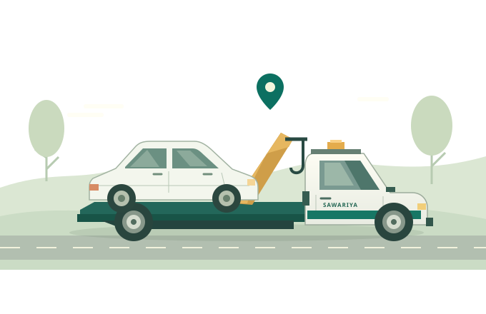
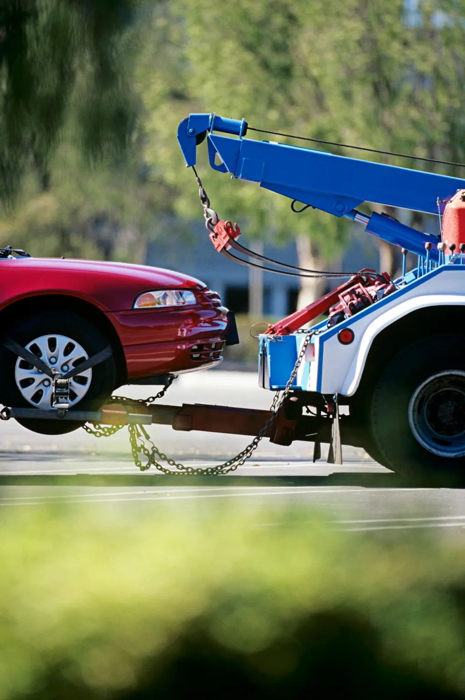

Bhilwara & bypass
Old Bus Stand, Sukhadia Circle, Gandhi Nagar, RIICO, Mandapam, and the outer ring road.
City & surrounding areasA breakdown shouldn’t bring everything to a stop. From car towing to roadside recovery, we’re here to help you get moving again.

Practical help for the unexpected.
One local team to call on.
Flatbed and wheel-lift assistance for cars, SUVs, and vehicles that need a lift.
Arrange a tow → ⚒02Engine trouble or an unexpected stop? Tell us what happened and where you are.
Get roadside help → ◇03Crane and recovery support for stranded, damaged, or off-road vehicles.
Talk to our team → ⌖04Moving beyond the city? Arrange vehicle transportation on interstate routes.
Plan your transport →
Led by Monu Bhai, Sawariya Crane is based at Old Bus Stand in Bhilwara. We bring local knowledge and a personal approach to every call.
No complicated process. Just a call to explain what you need.
Discuss your vehicle, the route, and the quote before arranging a tow.
We help arrange the right recovery option for your situation.
From Bhilwara’s neighbourhoods
to the highways connecting India.
Old Bus Stand, Sukhadia Circle, Gandhi Nagar, RIICO, Mandapam, and the outer ring road.
City & surrounding areasThe Jaipur–Ajmer–Bhilwara–Chittorgarh–Udaipur route, including highway bypasses.
Highway assistanceShahpura, Mandal, Asind, Bijolia, Gangapur, Jahazpur, and Gulabpura.
District recoveryArrange transport to Delhi NCR, Ahmedabad, Surat, Mumbai, Indore, and beyond.
Scheduled transport◷ Arrival times depend on your location and vehicle availability. Call for an estimate.
Share a few details to start a conversation with our team on WhatsApp.
↗Need help right away? Call us.72319 70757Tell us your exact location when you call. The team can estimate arrival based on distance, traffic, and the nearest available vehicle.
Contact us with your vehicle model and condition. We can discuss a suitable flatbed or wheel-lift option before arranging recovery.
Yes. Share your pickup location, destination, and preferred date with the team to discuss availability and a quote.
Pricing depends on the vehicle, its condition, equipment needed, and distance. Ask the team for a quote before confirming.
Monu Bhai · Old Bus Stand, Bhilwara, Rajasthan